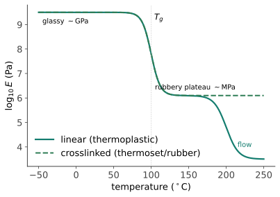

性能 III · 高分子：链的物理
塑料、橡胶、纤维、涂料、生物组织——高分子占人类使用材料体积的一半以上，却遵守一套与金属陶瓷完全不同的规则：性能由"链"的构象、缠结与运动决定，且时间与温度可以互换。本页给这套规则的最小完整版。
1. 链的语言
结构层级：单体 → 链（分子量 \(M\)，注意是分布不是单值：\(M_n\) 数均、\(M_w\) 重均、\(M_w/M_n\) 多分散度）→ 链的构象（无规线团，均方末端距 \(\langle R^2\rangle \propto N\)——🔗 随机游走！数学站的布朗运动就是高分子链的构象统计）→ 凝聚态（非晶/半结晶/交联网络）。
三分类（决定加工方式的第一问）：
| 类型 | 结构 | 加热行为 | 例 |
|---|---|---|---|
| 热塑性 | 线型/支化，链间弱键 | 可反复熔融成形（可回收） | PE、PP、PET、PC、尼龙 |
| 热固性 | 三维交联网络 | 不熔（分解） | 环氧、酚醛、不饱和聚酯 |
| 弹性体 | 轻度交联 + \(T_g\) 低于室温 | 高弹形变 | 天然橡胶、硅橡胶 |
支化与立构规整性：HDPE（线型、高结晶、硬）vs LDPE（支化、低结晶、软）——同一个单体，因链的拓扑差出两种商品；等规聚丙烯能结晶（Ziegler–Natta 催化剂的诺奖工作），无规聚丙烯是黏胶。
2. 玻璃化转变：高分子的中心温度

\(T_g\) 决定用途：室温在 \(T_g\) 之下 = 硬塑料（PS、PMMA、PC）；之上 = 橡胶（天然橡胶 \(T_g \approx -70\) °C）。PVC 加增塑剂把 \(T_g\) 从 +80 拉到 -40 °C——同一种聚合物做出下水管与雨衣，配方工程的教科书案例。
半结晶聚合物有两个温度：\(T_g\)（非晶区解冻）与 \(T_m\)（晶区熔化）——PET 瓶身在两者之间被吹塑取向；结晶度决定透明度（球晶散射光 ⇒ 结晶 PE 乳白、非晶 PS 透明）与强度。
3. 黏弹性：时间与温度可以互换
高分子既非纯弹性也非纯黏性——应力响应依赖时间尺度：蠕变（恒应力下持续变形——塑料椅子坐久了塌）、应力松弛（恒应变下应力衰减——密封圈失效）、滞后（循环加载生热——轮胎滚动阻力）。
时温等效原理（WLF）：升高温度 ≡ 延长观察时间。\(10^{-3}\) s 的冲击下橡胶像玻璃（所以低温橡胶密封在快速加载下脆断——挑战者号 O 形圈事故的核心机理：低温使 \(T_g\) 相对上移 + 快速加载，材料从橡胶态跌进玻璃态）；反之慢加载下塑料像流体。主曲线法：短时高温实验外推长时室温寿命——高分子寿命预测的标准工具，也是本页最有工程价值的一招。
橡胶弹性的熵起源（反直觉之最）：拉伸橡胶时链从无规线团被拉直 ⇒ 构象熵下降，回复力来自熵而非键的伸长：
——弹性模量正比于温度：加热橡胶带它会收缩（金属受热膨胀，橡胶受热"变强"）；快速拉伸橡皮筋贴嘴唇会觉得热（熵减放热）。这是热力学第二定律在你手里的实物演示。
4. 增韧、共混与复合
增韧机制：橡胶粒子增韧（HIPS、ABS——粒子引发大量银纹/剪切带耗能）；纤维增强（玻纤/碳纤 + 环氧 = 结构复合材料，🔗 机器的力学站材料页）；共混与相容剂（多数聚合物互不相容——界面工程是配方核心）。
降解与老化：紫外（光氧化，加炭黑/受阻胺）、热氧、水解（PET、尼龙）、应力开裂（ESC——洗涤剂 + 应力使 PE 开裂）。塑料没有"疲劳极限"意义上的永久安全区，寿命是配方 + 环境的函数。
可持续性一瞥：机械回收（分选与降级）、化学回收（解聚回单体，PET 与聚酯路线最成熟）、生物基/可降解（PLA、PHA——注意"可降解"通常需工业堆肥条件，非自然环境速降）。这条线的技术与政策变动快，前沿页保持更新。
5. 数字感与反直觉
- \(T_g\)（°C）：硅橡胶 -125 ｜ 天然橡胶 -70 ｜ PE -110（但 \(T_m\) 130）｜ PP -10 ｜ PET 75 ｜ PC 150 ｜ PS 100；
- 模量跨度：橡胶 ~1 MPa → 玻璃态塑料 ~3 GPa → 碳纤维 ~230 GPa（同为"有机材料"，四个数量级）；
- 反直觉：橡胶加热收缩、拉伸放热（熵弹性）；高分子的强度随分子量增加而增（需超过缠结分子量才有力学意义）；"塑料疲劳"往往是热失效——滞后生热导致局部软化，与金属疲劳机理完全不同。
【研】对标 Rubinstein & Colby《Polymer Physics》、Ward《Mechanical Properties of Solid Polymers》；标度理论、Rouse/蛇行模型（reptation，de Gennes 诺奖）、WLF 方程推导是研究生主干。
下一页回到无机世界最古老也最前沿的家族——陶瓷与玻璃：为什么它们强而脆，工程上如何与这种脆性共处。